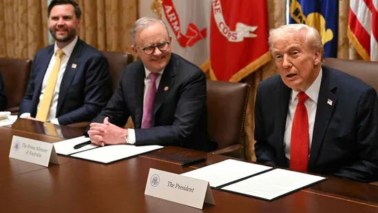

By : Shivam Pratap Singh
US President Donald Trump on Monday threatened China on trade tariffs, saying that he would impose 155 percent levies on China if Xi Jinping signed a fair deal with Washington.
The statement came as Trump signed a critical minerals agreement with the Australian Prime Minister Anthony Albanease at the White House.
"I think China’s been very respectful of us. They’re paying tremendous
amounts of money to us in the form of tariffs.
As you know, they’re
paying 55% — that's a lot of money... China’s paying 55% and a potential
155% come November 1st unless we make a deal," Trump said before his
bilateral talks with Albanease.
The Republican pointed out that Washington had worked out a trade deal
with several countries,
who he said were “earlier taking advantage” of the US. “Not anymore,” the
MAGA leader said.
“I expect we will probably work out a very fair trade deal with President
Xi of China. I think most of you will be there. It will be very exciting,”
Trump added.
Donald Trump's earlier jike in China tariffs
Donald Trump had earlirt
announced 100 per cent tariff on goods from China, along with new
export controls on "any and all critical software" by November 1. This
would top the
55 percent levies that already exist on the goods that Beijing exports to
Washington.
Speaking to reporters on Sunday (local time), Trump said, “I have a
very good relationship with President Xi of China. We're having disputes
on things. They're paying us a tremendous amount of money in tariffs. And
they'd probably like to have it be less. And we'll work on that. But they
have to give us some things too.”
“You know, they paid a lot during my first administration, my first term.
Now they're paying an unbelievable amount of money to the United States.
They probably can't pay that much. And I'm okay with that. We can lower
that. But they have to do things for us too. It's no longer a one-way
street,” he added.
Prior to these comments, US treasury secretary Scott Bessent said that
China and the US will hold talks later this week in Malaysia, days after
Trump reportedly planned to cancel his first face-to-face meeting with
China’s President Xi Jinping since he returned to the White House.